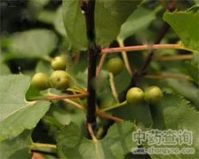

鼠李

拼音
Shǔ Lǐ
别名
老乌眼、老鸹眼、臭李子
来源
鼠李科鼠李属植物鼠李Rhamnus dahurica Pall.，或乌苏里鼠李R. ussuriensis J. Vass.，以树皮和果实入药。春季采树皮，刮去外面粗皮，切丝晒干；秋季采果，晒干。
生境分布
生于山地杂木林中。分布东北、河北、山东、山西、陕西、四川、湖北、湖南、贵州、云南、江苏、浙江等地。
药材特点
鼠李，又名：乌槎树（《唐本草》），冻绿柴、老鹳眼、红皮绿树、大绿。 落叶小乔木或开张的大灌木，高可达10米。树皮灰褐色，小枝褐色而稍有光泽，顶端有大形芽。叶对生于长枝上，或丛生于短枝上；有长柄；长圆状卵形或阔倒披针形，长4～11厘米，宽2.5～5.5厘米，先端渐尖，基部圆形或楔形，边缘具圆细锯齿，上面亮绿色，下面淡绿色，无毛或有短柔毛，侧脉通常4～5对。花2～5束生于叶腋，黄绿色，雌雄异株，径4～5毫米；萼4裂，萼片狭卵形，锐头；花冠漏斗状钟形，4裂；雄花，雄蕊4，并有不育的雌蕊；雌花，子房球形，2～3室，花柱2～3裂，并有发育不全的雄蕊。核果近球形，径5～7毫米，成熟后紫黑色。花期5～6月。果期8～9月。 本植物的根（鼠李根），树皮（鼠李皮）亦供药用，另详专条。
性状
干燥果实近球形，外表黑紫色。光泽而有皱缩纹。果肉疏松，内层坚硬，通常有果核2枚；果核卵圆形，背面有狭沟。
性味
树皮：苦，寒。 果实：甘、微苦，平。有小毒。
功能主治
树皮：清热，通便。用于大便秘结。 果实：止咳，祛痰。用于支气管炎，肺气肿，龋齿痛，痈疖。
用法用量
树皮1～3钱，果实3～5分，可制成酒剂服；外用适量，果实捣烂敷患处。
化学成分
果实含大黄素、大黄酚、蒽酚；另含山柰酚。种子中有多种黄酮甙酶。树皮含大黄素、芦荟大黄素、大黄酚等多种蒽醌类。
药理作用
1：无药理作用数据
摘录
《全国中草药汇编》